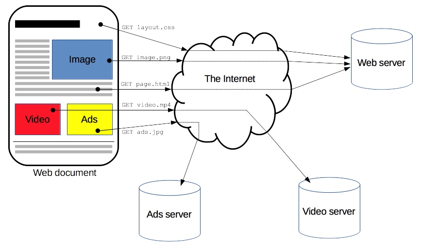
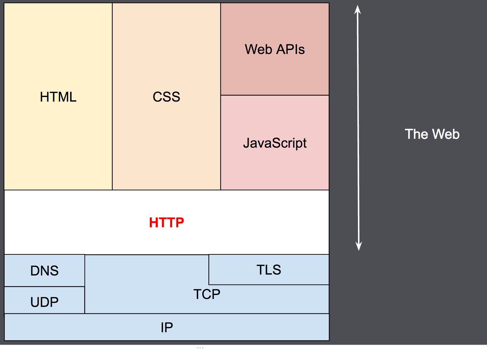
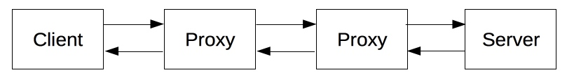
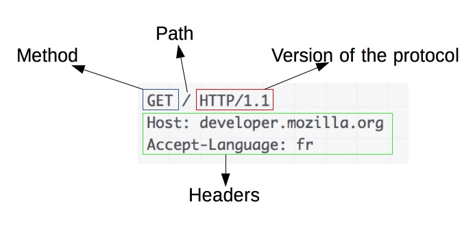
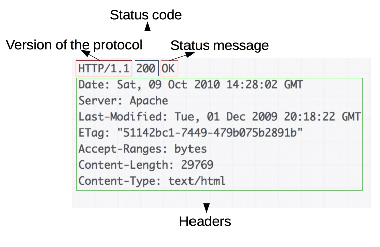

HTTP是一种能够获取如 HTML 这样的网络资源的 protocol(通讯协议)。它是在 Web 上进行数据交换的基础，是一种 client-server 协议，也就是说，请求通常是由像浏览器这样的接受方发起的。一个完整的Web文档通常是由不同的子文档拼接而成的，像是文本、布局描述、图片、视频、脚本等等。

客户端和服务端通过交换各自的消息（与数据流正好相反）进行交互。由像浏览器这样的客户端发出的消息叫做 requests，被服务端响应的消息叫做 responses。

HTTP被设计于20世纪90年代初期，是一种可扩展的协议。它是应用层的协议，通过TCP，或者是TLS－加密的TCP连接来发送，理论上任何可靠的传输协议都可以使用。因为其良好的扩展性，时至今日，它不仅被用来传输超文本文档，还用来传输图片、视频或者向服务器发送如HTML表单这样的信息。HTTP还可以根据网页需求，仅获取部分Web文档内容更新网页。
基于HTTP的组件系统
HTTP是一个client-server协议：请求通过一个实体被发出，实体也就是用户代理。大多数情况下，这个用户代理都是指浏览器，当然它也可能是任何东西，比如一个爬取网页生成维护搜索引擎索引的机器爬虫。
每一个发送到服务器的请求，都会被服务器处理并返回一个消息，也就是response。在这个请求与响应之间，还有许许多多的被称为proxies的实体，他们的作用与表现各不相同，比如有些是网关，还有些是caches等。

实际上，在一个浏览器和处理请求的服务器之间，还有路由器、调制解调器等许多计算机。由于Web的层次设计，那些在网络层和传输层的细节都被隐藏起来了。HTTP位于最上层的应用层。虽然底层对于分析网络问题非常重要，但是大多都跟对HTTP的描述不相干。
客户端：user-agent
user-agent 就是任何能够为用户发起行为的工具。这个角色通常都是由浏览器来扮演。一些例外情况，比如是工程师使用的程序，以及Web开发人员调试应用程序。
浏览器总是作为发起一个请求的实体，他永远不是服务器（虽然近几年已经出现一些机制能够模拟由服务器发起的请求消息了）。
要展现一个网页，浏览器首先发送一个请求来获取页面的HTML文档，再解析文档中的资源信息发送其他请求，获取可执行脚本或CSS样式来进行页面布局渲染，以及一些其它页面资源（如图片和视频等）。然后，浏览器将这些资源整合到一起，展现出一个完整的文档，也就是网页。浏览器执行的脚本可以在之后的阶段获取更多资源，并相应地更新网页。
一个网页就是一个超文本文档。也就是说，有一部分显示的文本可能是链接，启动它（通常是鼠标的点击）就可以获取一个新的网页，使得用户可以控制客户端进行网上冲浪。浏览器来负责发送HTTP请求，并进一步解析HTTP返回的消息，以向用户提供明确的响应。
Web服务端
在上述通信过程的另一端，是由Web Server来服务并提供客户端所请求的文档。Server只是虚拟意义上代表一个机器：它可以是共享负载（负载均衡）的一组服务器组成的计算机集群，也可以是一种复杂的软件，通过向其他计算机（如缓存，数据库服务器，电子商务服务器 ...）发起请求来获取部分或全部资源。
Server 不一定是一台机器，但一个机器上可以装载的众多Servers。在HTTP/1.1 和Host头部中，它们甚至可以共享同一个IP地址。
代理（Proxies）
在浏览器和服务器之间，有许多计算机和其他设备转发了HTTP消息。由于Web栈层次结构的原因，它们大多都出现在传输层、网络层和物理层上，对于HTTP应用层而言就是透明的，虽然它们可能会对应用层性能有重要影响。还有一部分是表现在应用层上的，被称为代理（Proxies）。代理（Proxies）既可以表现得透明，又可以不透明（“改变请求”会通过它们）。代理主要有如下几种作用：
缓存（可以是公开的也可以是私有的，像浏览器的缓存）
过滤（像反病毒扫描，家长控制...）
负载均衡（让多个服务器服务不同的请求）
认证（对不同资源进行权限管理）
日志记录（允许存储历史信息）
HTTP 的基本性质
HTTP 是简单的
虽然下一代HTTP/2协议将HTTP消息封装到了帧（frames）中，HTTP大体上还是被设计得简单易读。HTTP报文能够被人读懂，还允许简单测试，降低了门槛，对新人很友好。
HTTP 是可扩展的
在 HTTP/1.0 中出现的 HTTP headers 让协议扩展变得非常容易。只要服务端和客户端就新 headers 达成语义一致，新功能就可以被轻松加入进来。
HTTP 是无状态，有会话的
HTTP是无状态的：在同一个连接中，两个执行成功的请求之间是没有关系的。这就带来了一个问题，用户没有办法在同一个网站中进行连续的交互，比如在一个电商网站里，用户把某个商品加入到购物车，切换一个页面后再次添加了商品，这两次添加商品的请求之间没有关联，浏览器无法知道用户最终选择了哪些商品。而使用HTTP的头部扩展，HTTP Cookies就可以解决这个问题。把Cookies添加到头部中，创建一个会话让每次请求都能共享相同的上下文信息，达成相同的状态。
注意，HTTP本质是无状态的，使用Cookies可以创建有状态的会话。
HTTP 和连接
一个连接是由传输层来控制的，这从根本上不属于HTTP的范围。HTTP并不需要其底层的传输层协议是面向连接的，只需要它是可靠的，或不丢失消息的（至少返回错误）。在互联网中，有两个最常用的传输层协议：TCP是可靠的，而UDP不是。因此，HTTP依赖于面向连接的TCP进行消息传递，但连接并不是必须的。
在客户端（通常指浏览器）与服务器能够交互（客户端发起请求，服务器返回响应）之前，必须在这两者间建立一个 TCP 链接，打开一个 TCP 连接需要多次往返交换消息（因此耗时）。HTTP/1.0 默认为每一对 HTTP 请求/响应都打开一个单独的 TCP 连接。当需要连续发起多个请求时，这种模式比多个请求共享同一个 TCP 链接更低效。
为了减轻这些缺陷，HTTP/1.1引入了流水线（被证明难以实现）和持久连接的概念：底层的TCP连接可以通过Connection头部来被部分控制。HTTP/2则发展得更远，通过在一个连接复用消息的方式来让这个连接始终保持为暖连接。
为了更好的适合HTTP，设计一种更好传输协议的进程一直在进行。Google就研发了一种以UDP为基础，能提供更可靠更高效的传输协议QUIC。
HTTP 能控制什么
多年以来，HTTP良好的扩展性使得越来越多的Web功能归其控制。缓存和认证很早就可以由HTTP来控制了。另一方面，对同源同域的限制到2010年才有所改变。
以下是可以被HTTP控制的常见特性。
缓存
开放同源限制
认证
代理和隧道
会话
HTTP 流
当客户端想要和服务端进行信息交互时（服务端是指最终服务器，或者是一个中间代理），过程表现为下面几步：
1、打开一个TCP连接：TCP连接被用来发送一条或多条请求，以及接受响应消息。客户端可能打开一条新的连接，或重用一个已经存在的连接，或者也可能开几个新的TCP连接连向服务端。
GET / HTTP/1.1
Host: developer.mozilla.org
Accept-Language: fr
3、读取服务端返回的报文信息：
HTTP/1.1 200 OK
Date: Sat, 09 Oct 2010 14:28:02 GMT
Server: Apache
Last-Modified: Tue, 01 Dec 2009 20:18:22 GMT
ETag: "51142bc1-7449-479b075b2891b"
Accept-Ranges: bytes
Content-Length: 29769
Content-Type: text/html
4、关闭连接或者为后续请求重用连接。
HTTP 报文
HTTP/1.1以及更早的HTTP协议报文都是语义可读的。在HTTP/2中，这些报文被嵌入到了一个新的二进制结构，帧。帧允许实现很多优化，比如报文头部的压缩和复用。即使只有原始HTTP报文的一部分以HTTP/2发送出来，每条报文的语义依旧不变，客户端会重组原始HTTP/1.1请求。因此用HTTP/1.1格式来理解HTTP/2报文仍旧有效。
有两种HTTP报文的类型，请求与响应，每种都有其特定的格式。
请求
HTTP请求的一个例子：

请求由以下元素组成：
一个HTTP的method，经常是由一个动词像GET, POST 或者一个名词像OPTIONS，HEAD来定义客户端的动作行为。通常客户端的操作都是获取资源（GET方法）或者发送HTML form表单值（POST方法），虽然在一些情况下也会有其他操作。
要获取的资源的路径，通常是上下文中就很明显的元素资源的URL，它没有protocol （http://），domain（developer.mozilla.org），或是TCP的port（HTTP一般在80端口）。
HTTP协议版本号。
为服务端表达其他信息的可选头部headers。
对于一些像POST这样的方法，报文的body就包含了发送的资源，这与响应报文的body类似。

响应报文包含了下面的元素：
HTTP协议版本号。
一个状态码（status code），来告知对应请求执行成功或失败，以及失败的原因。
一个状态信息，这个信息是非权威的状态码描述信息，可以由服务端自行设定。
HTTP headers，与请求头部类似。
可选项，比起请求报文，响应报文中更常见地包含获取的资源body。
基于HTTP的最常用API是XMLHttpRequest API，可用于在user agent和服务器之间交换数据。 现代Fetch API提供相同的功能，具有更强大和灵活的功能集。
另一种API，即服务器发送的事件，是一种单向服务，允许服务器使用HTTP作为传输机制向客户端发送事件。 使用EventSource接口，客户端打开连接并建立事件句柄。 客户端浏览器自动将到达HTTP流的消息转换为适当的Event对象，并将它们传递给专门处理这类type事件的句柄，如果有这么个句柄的话。但如果相应的事件处理句柄根本没有建立，那就交给onmessage事件处理程序处理。
总结
HTTP是一种简单可扩展的协议，其Client-Server的结构以及轻松扩展头部信息的能力使得HTTP可以和Web共同发展。
即使HTTP/2为了提高性能将HTTP报文嵌入到帧中这一举措增加了复杂度，但是从Web应用的角度看，报文的基本结构没有变化，从HTTP/1.0发布起就是这样的结构。会话流依旧简单，通过一个简单的 HTTP message monitor就可以查看和纠错。